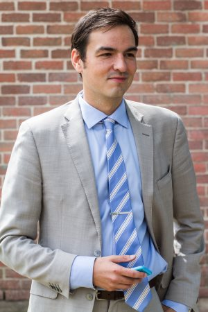

<!-- About Section -->
    <section id="a-propos">
        <div class="container">
            <div class="row">
                <div class="col-lg-12 text-center">
                    <h2 class="section-heading">Un militant engagé</h2>
					<div class="row">
						<div class="col-md-3 col-lg-offset-2 col-lg-3">
							<p></p>
						</div>
						<div class="col-md-9 col-lg-4 text-justify">
							<p>Je suis détenteur d’une licence en philosophie de l’Université Bordeaux-III et d’une maîtrise en philosophie de l’Université de Montréal. J’ai étudié et enseigné à l’international. J’ai complété des stages linguistiques en Angleterre et en Allemagne, en plus d’enseigner la philosophie au collège Technologico de Monterrey, au Mexique. À mon retour au Québec, j’ai enseigné la philosophie au Collège Heritage, dans la région de Gatineau, ainsi que le latin au Collège Jean-de-Brébeuf.</p>
                            <p>Mes expériences à l’international m’ont permis de constater à quel point nous sommes privilégiés d’être Québécois. Si nous voulons avoir quelque chose à offrir aux autres cultures, nous devons être maîtres chez nous afin de pouvoir dialoguer avec elles d’égal à égal, dans notre propre pays et dans notre propre langue. La philosophie m’a enseigné comment penser et rêver le projet souverainiste, un projet que j’aimerais réaliser avec vous. Nous méritons un pays, notre pays.</p>
						</div>
					</div>
                </div>
            </div>
        </div>
    </section>